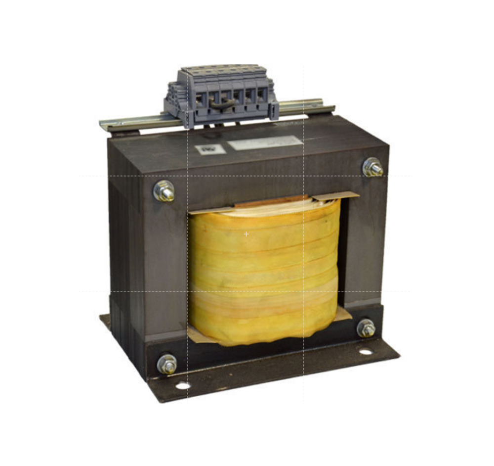
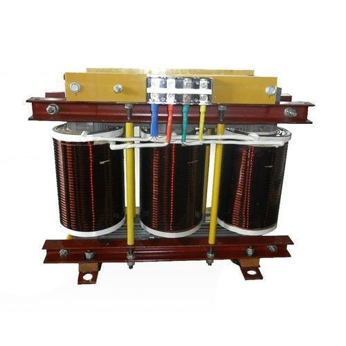
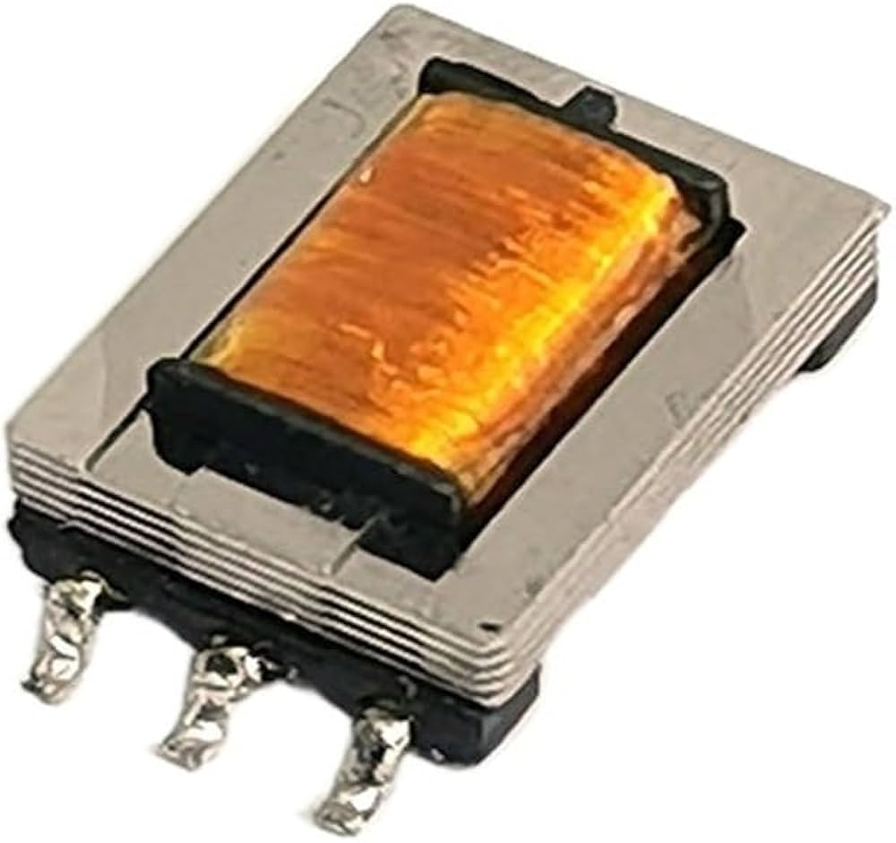
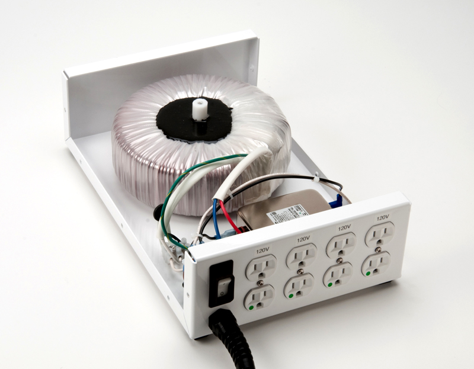
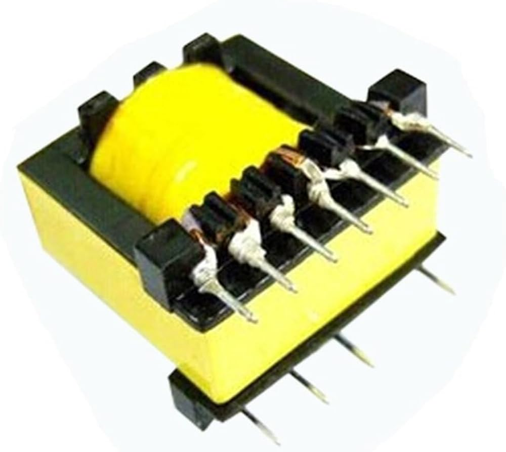

Welcome to ElectroSpecs | Explore Electronics Components | Learn & Build 🚀

SINGLE PHASE ISOLATION TRANSFORMER

THREE PHASE ISOLATION TRANSFORMER

SHIELDED ISOLATION TRANSFORMER

MEDICAL ISOLATION TRANSFORMER

HIGH FREQUENCY ISOLATION TRANSFORMER